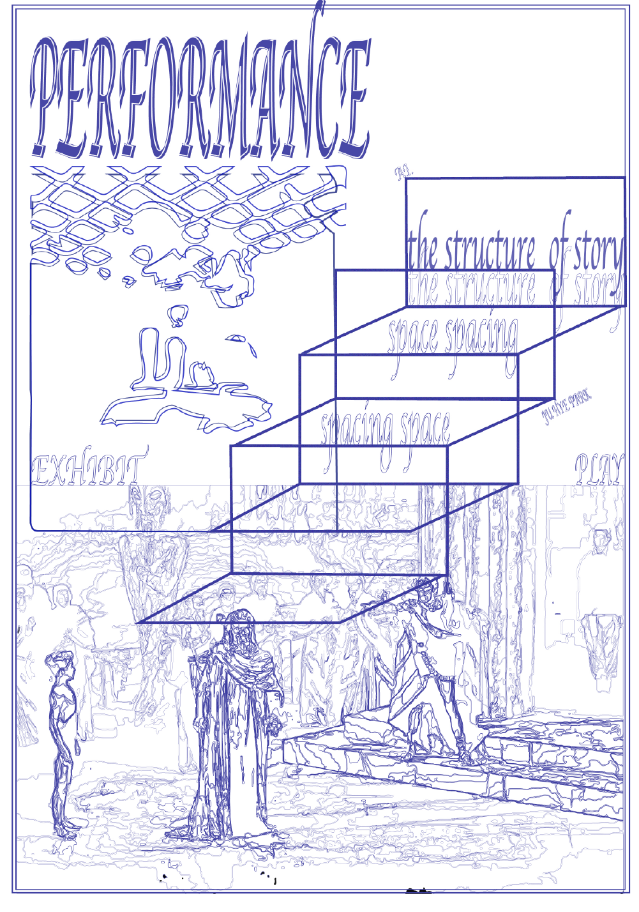
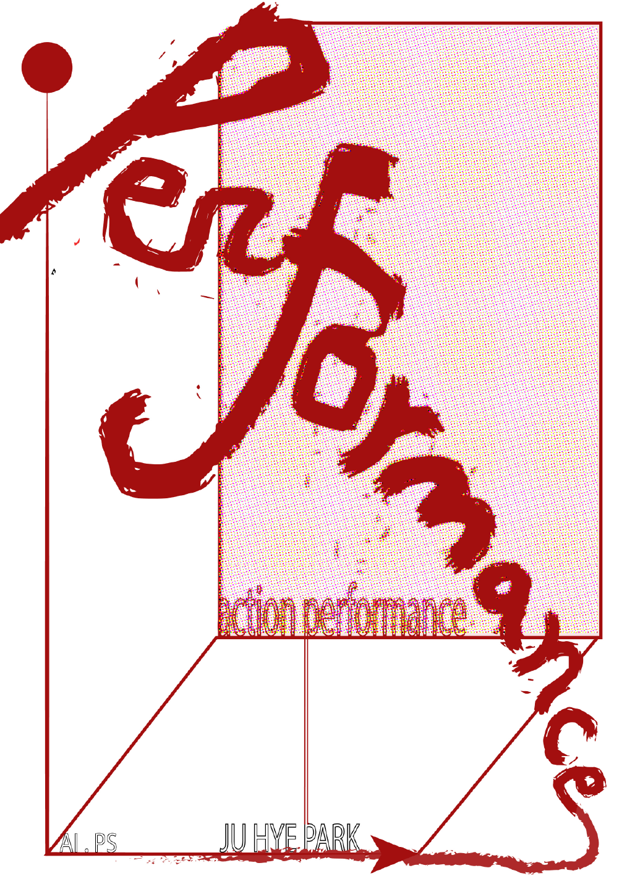
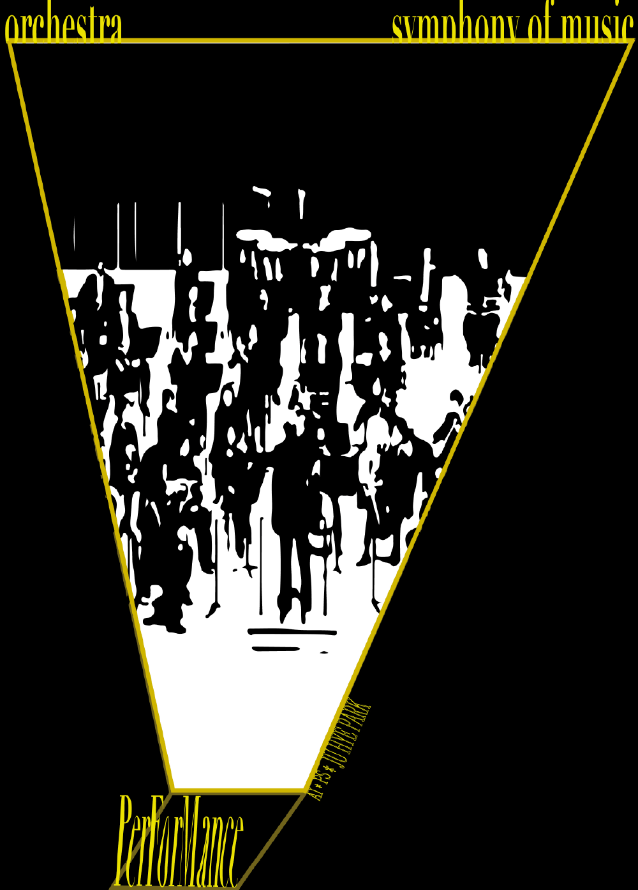

Project
Contact
@ssal9_89
Designer
Shape Research
박주혜
SHAPE RESEARCH
Category
Shape Poster1 / Shape Poster2 / Shape Poster3
과거 속 나의 물건들부터 현재 나의 패턴을 지나 미래에 내가 구상하는 것까지.
사각형,프레임1
사각형,프레임2
‘사람들은 이야기를 좋아한다’ 를 전재로, 이야기들이 담기는 형태에 집중했다. 그것이 신화로서, 연극의 형태로든, 공연의 형태든, 퍼포먼스의 형태로든지 말이다.
제일 기본이 되는 것인 책이다.(이건 전의 작업이라 아래 이미지에는 포함되어 있지 않다.)


